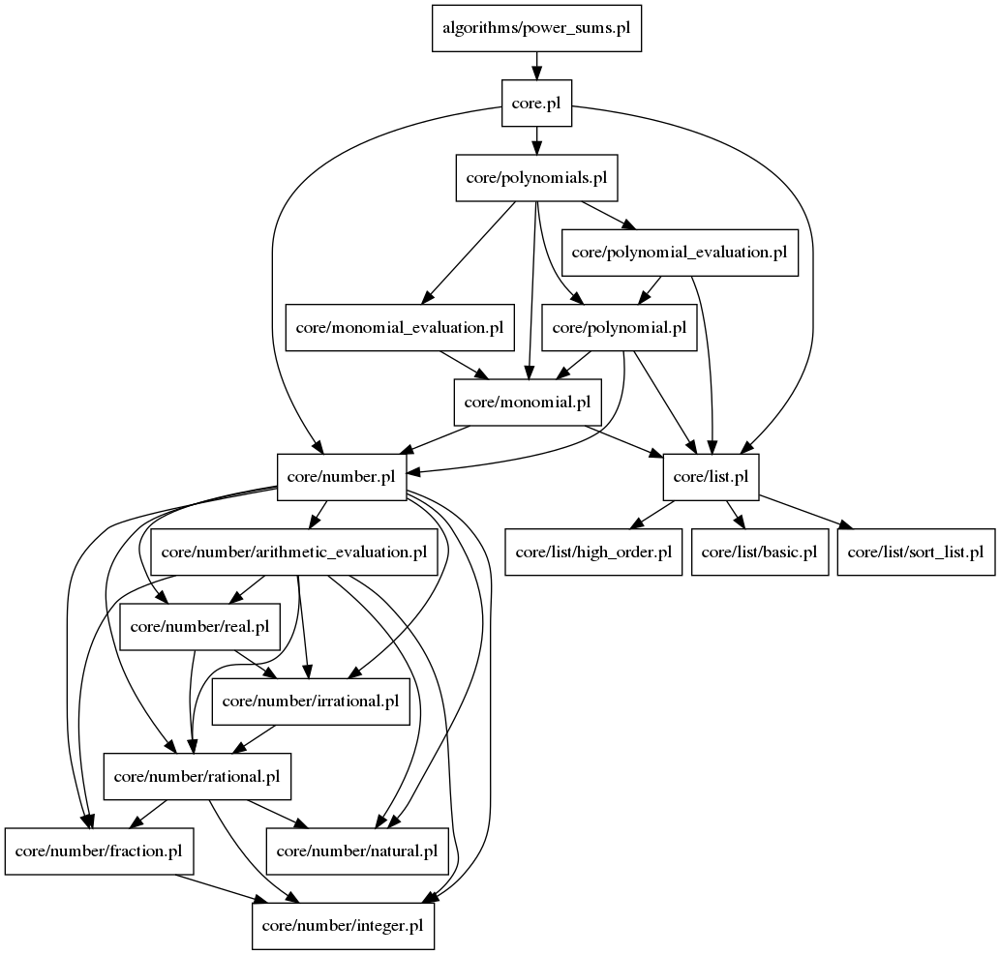

Documentation for Prolog file: power_sums.pl
- This file contains the algorithms to compute the polynomial that represents the sum of the first n natural numbers each raised to a certain power.
- This power is given in the predicate and must be a natural value.

-
- Form:
- power_sums(Power, Poly)
- Description:
- Poly is a univariate polynomial on variable n that computes the value:
\sum_{i=1}^n i^Power
- Constraints:
-
- Form:
- power_sums_list(Power, ListPoly)
- Description:
- The j-th element of ListPoly is a list of two values:
-
- A natural value P
-
- A univariate polynomial in variable n that computes the sum
\sum_{i=1}^n i^P
- ++> ListPoly is decreasingly sorted, that is, the first value P in ListPoly for Power is Power itself.
- Constraints:
Generated with DYP